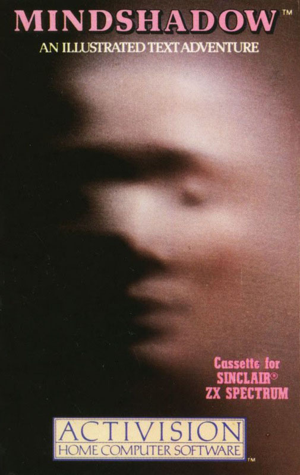
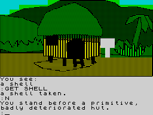

Mindshadow


{kind=link}

| Publisher: | Activision |
| Price: | £7.99 |
| Year: | 1985 |
| Source: | CRASH, Issue 25 |

You might wonder at times why I place so much editorial comment in reviews. There is a simple reason for this. If I were just to keep to saying ‘yes’, ‘no’, or ‘maybe’ about games this column would become tedious in the extreme. Mindshadow is an awfully good program, there’s no doubting that. But what I would like to comment on is its lacklustre marketing, and perhaps, theme. I mean to say, when you have the likes of Robin of Sherwood, Sherlock, and Lord of the Rings knocking around with their immediate hookability, is it really enough just to throw a game at the public with the following spiel “lost in the middle of nowhere. In the middle of a mystery. Who are you? Where will you go? What will you do? London. Luxembourg. You struggle for answers, your identity, and for the faceless betrayer who left you to perish”?

As you may be aware, everyone who hasn’t ‘made it’ and settled into the placid waters of The Civil Service must become a small business. This generally entails either clothing, feeding or entertaining those who work in the public sector and the buzz word for success is USP: the unique selling point which will give your business the edge over the competition. (Of course this country really needs small businesses to create wealth, like manufacturing or new technology — but no-one’s told the bank managers who give respectability a bad name). Anyhow, I digress. The point is where on earth is the unique selling point in this product? There isn’t one.
Having said all that above, this program really is good and commercial and knocks spots off the opposition. ‘Good’ because it sports many classy features like a superb tutorial which provides a marvellous introduction to playing adventures and includes an adventure simulation taking you through the step by step thinking behind the moves, GET ALL and DROP ALL, a strong EXAMINE command, QUICK SAVE and QUICKLOAD which allows saving within RAM, and a HELP ME CONDOR command which can be used three times when all else fails (Condor is the bird which featured in that superb BBC program set in South America). Unlike the idiotic, condescending quips of so many disappointing rivals this game’s HELP function is truly superb. When you ask for help, help is exactly what you get. How this game has ticked all the boxes and managed to get every last sophisticated feature into 48K will leave the opposition scratching their heads for some time to come. ‘Commercial’ because it has a superb picture at each location, very well-designed and drawn. Rivals will be particularly impressed by the subtle use of colour and shading to give the graphics a very distinctive flavour. Whoever designed the graphics certainly deserves a pat on the back.
Play-wise this game is in a different league to most I review, with a friendly vocabulary, and logical problems which are not too difficult to solve. It is one of those pleasant adventures where effort is directed towards problem solving rather than word-matching. This is in no small way due to the game’s origins, as spellings and grammar point to an American source. A dory in one of the first few frames turns out to be an American word for boat (a flat-bottomed boat with a high bow and stern).
Although much of what I’ve said concerning this game is complimentary there still remains one area where it knocks the opposition for six. The program’s intelligent responses to anything you might care to input is truly staggering when compared to the poor and inadequate ‘You Can’ts’ of its rivals. Take these (by no means the best) examples. In the first frame on the beach you can pick up the shell and LISTEN SHELL which elicits ‘You hear Lorne Greene narrating an ocean series!’. North and east to the dory EXAM DORY gives ‘The boat is obviously quite old. Its frame of rotten wood and rusted steel is all that remains’. GET STEEL doesn’t just give the obligatory OK but the following ‘You strip a solid chunk of steel off the skeleton of the boat’. EXAM STEEL now gives another variation! ‘Although slightly rusted, the steel is in pretty good shape’. To the east, in the clearing of a small jungle oasis, EXAM VINE gives a different response after you have picked a vine. In other words the program is always aware of what you have done and keeps the responses intelligent. This is adventuring at its best and if you don’t see this one you will be the loser.
COMMENTS
| Difficulty: | Straightforward |
| Graphics: | Very impressive and a new distinctive style |
| Presentation: | Good-looking |
| Input facility: | Some way beyond verb/noun |
| Response: | Very fast |
| Special features: | Superb tutorial intro to adventuring and useful HELP function |
| General rating: | Excellent |
| Atmosphere: | 9 |
| Vocabulary: | 10 |
| Logic: | 9 |
| Addictive quality: | 9 |
| Overall: | 9 |